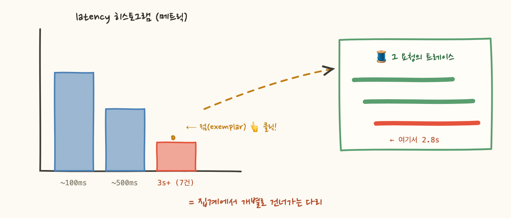

p99 알람이 울립니다. latency 히스토그램을 열어보니 3초 이상 버킷에 7건이 들어와 있어요. 자, 다음 질문 — 그 7건이 누구죠? 히스토그램은 대답하지 못합니다. "3초 버킷에 7건"이 그가 아는 전부예요. 집계는 개별을 버리는 대가로 싸다고 했죠. 그 청구서가 바로 지금 도착한 겁니다.
이번 편은 집계에서 개별로 되돌아가는 다리(exemplar), 그리고 그 다리 건너편의 트레이스를 얼마나 버려도 되는가(샘플링)에 대한 이야기예요.
아이디어는 소박해요. 히스토그램의 각 버킷에 "이 버킷에 떨어진 요청 중 하나의 traceId"를 견본(exemplar)으로 같이 저장하는 겁니다. 개별을 전부 남기는 건 아니고 — 그러면 다시 비싸지니까 — 버킷당 최근 것 하나면 충분해요.
이게 대시보드에서 어떻게 보이냐면, Grafana의 latency 히트맵 위에 작은 점들이 찍힙니다. 3초 버킷의 점을 클릭하면 → 그 느렸던 실제 요청의 트레이스가 열려요. 1편에서 말한 디버깅 릴레이(메트릭이 소리치고 → 트레이스가 위치를 찍는다)가 클릭 한 번으로 압축되는 거죠. 메트릭과 트레이스라는 두 세계를 잇는 공식 통로라서, "메트릭과 추적의 상관관계"라고 부르는 게 바로 이 장치입니다.

그런데 이 다리가 성립하려면 건너편에 트레이스가 남아 있어야 하죠. 문제는 트레이스가 요청마다 생기는 비싼 데이터라서, 대량 트래픽에선 전부 저장할 수 없다는 거예요. 그래서 샘플링을 합니다 — 일부만 남기고 버려요. 그러면 당연히 불안해집니다. "버렸는데 장애 대응이 되나?"
된다고 말하는 쪽의 논리는 세 줄기예요. 첫째, 감지는 어차피 메트릭 담당입니다. 트레이스를 1%만 남겨도 카운터는 모든 요청에서 +1이라 전수 집계고, "장애가 났다/에러율 5%다"라는 판단은 샘플링과 무관하게 정확해요. 둘째, 시스템 장애는 반복됩니다. 같은 실패가 분당 수백 번 일어나는 상황이면 1% 샘플링으로도 1분에 실패 사례 수 개가 잡히고, 디버깅에 필요한 건 부러진 여정의 대표 사례 몇 개지 전부가 아니에요 — 어차피 다 같은 곳에서 부러져 있으니까. 셋째, 버릴 걸 골라서 버릴 수 있습니다. 에러 트레이스와 느린 트레이스는 100% 보관하고, 빠르고 성공한 지루한 것들만 깎는 거죠.
셋째 논리가 성립하려면 조건이 있어요. "끝나보니 에러였던 것"을 남기려면 요청이 끝난 뒤에 보관을 결정해야 하죠. 이게 tail-based sampling입니다 — 일단 다 모았다가 출구에서 "흥미로운가?"를 보고 선별해요. 반대로 head-based는 요청이 시작되는 입구에서 주사위를 굴립니다. 구현이 싸고 단순하지만, 그 요청이 실패할지 모르는 채로 버리는 결정을 내려요.
이제 반례를 만나볼 차례예요. 이런 문의가 옵니다 — "어제 오후 3시에 제 결제가 안 됐어요." 시스템 전체는 멀쩡했고 이 실패는 딱 한 번 일어났어요. head-based 1% 샘플링이었다면? 그 요청의 트레이스는 99% 확률로 이미 버려졌습니다. "장애는 반복된다"는 둘째 논리가 집계적 장애에만 성립하고, 단발성·특정 사용자 문제에서는 무너지는 거예요. VIP 고객의 한 번뿐인 실패, 이상한 엣지 케이스, 공격자가 딱 한 번 찔러본 정찰 — 전부 이 부류입니다.
참고로 AWS X-Ray의 기본이 head-based(초당 1건 + 초과분의 5%)예요. 기본 설정만 믿고 있다가 "그 요청 트레이스 주세요"라는 요구를 받으면 빈손이 될 수 있다는 뜻이죠. 단발 실패까지 대응 범위에 넣으려면 tail-based(OTel Collector의 tail sampling processor 등)나, 최소한 에러 요청에 대한 샘플링 우대 규칙이 필요합니다.